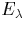
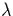

Expanding the charge density into a set of orthonormal wavefunctions is purely used as an artificial way of separating the charge density, and no checks are included to map these onto a set of physical single particle states. Nevertheless there often appears to be a good correlation between these and single particle states [25], and they are routinely used as semi-quantitative indicators of the behaviour of real states. The exception to this is the ionisation energy, i.e. the energy of the highest occupied orbital, which is given exactly in this theory.
All wavefunction plots included in this thesis show Kohn-Sham wavefunctions rather than true single particle plots, and are labelled accordingly. Equally any interpretation of the associated energies,  as quasi-particle energies is not correct although there is normally a qualitative agreement between the two. Note that this issue is further complicated through the use of clusters, which artificially widens the band gap.
Density functional theory has a number of advantages, discussed above. The exchange potential does not depend on the orbitals, ,unlike Hartree-Fock theory. Working with the charge density minimises the number of system variables, and in conjunction with approximations such as the LDA large, accurate calculations are possible. However DFT also has a number of shortcomings. As a ground state theory any physical interpretation of calculated excited states is not theoretically justified. It consistently underpredicts semiconductor band gaps, although in AIMPRO calculations this is compensated for through the use of finite clusters, which tend to increase the band gap (see Section 3.7.3). In some cases the band gap predictions are qualitatively wrong, e.g. for NiO, DFT predicts metallic behaviour whereas experimentally it is a good insulator.